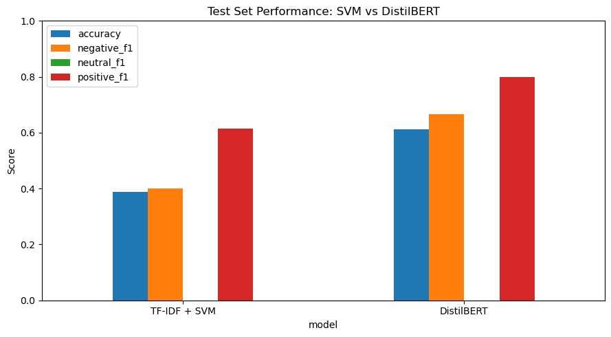

This project researches the application of three core Natural Language Processing (NLP) tasks: Sentiment Classification, Topic Classification, and Named Entity Recognition on a test set of 18 sentences and 15 annotated token sequences spanning the entertainment domain namely books and films, and sports domains. Because the machine learning models are trained on data that differs from the test set (such as airline tweets, Amazon product reviews, and Reuters newswire), this project provides a realistic, quantitative analysis of model performance and error characterization in domain transfer scenarios.
Topic Classification
Topic Classification Identify document-level domain categories (book, movie, or sports) using fine-tuned BERT transformers which are pre-trained on multi-domain product review data, evaluating semantic transfer across mismatched label spaces.
Sentiment Classification
Sentiment Classification Classify sentence-level sentiment across three classes (positive, neutral, and negative) using both supervised machine learning and rule-based machine learning approaches to compare methodological strengths and weaknesses during domain transfer.
Named Entity Recognition (NER)
Named Entity Recognition Extract and classify named entities, such as PER, ORG, LOC, GPE, TIM, and WORK in BIO format using token-level feature engineering and a Support Vector Classifier. This involves examining performance degradation on unseen entity types across different datasets, including CONLL-2003, Kaggle NER evaluation, and the provided NER-test.tsv test set.
Test Sets and Annotation Scheme
The test sets comprise 18 sentences for sentiment/topic analysis (6 positive, 6 neutral, 6 negative; balanced by class) and 15 sentences with token-level BIO entity annotations for NER evaluation. Sentence lengths range from 8 to 28 tokens.
All team members contributed substantively to three dimensions: (1) implementation and experimental coding, (2) quantitative and qualitative result analysis, and (3) poster preparation and technical writing.
Evelina Ravlusevic
Coding: TF-IDF vectorization pipeline and LinearSVC model training; data loading and preprocessing. DistilBERT transformer-based sentiment classification. Analysis: Sentiment classification error patterns; false positive/negative characterization on airline tweets domain. Poster: Sentiment section composition and result integration.
Ben Gratz
Coding: BERT fine-tuning on Amazon Multi-Domain Reviews dataset (ACL); early stopping implementation; hyperparameter selection (learning rate 2e-5, 3 epochs). Analysis: Domain mismatch characterization between training categories (books, DVD, kitchen, electronics) and test categories (books, movie, sports); semantic transfer analysis through proxy category matching (DVD→movie, kitchen→restaurant). Poster: Topic classification methodology, results, and error analysis sections.
Emma van der Tol
Coding: CoNLL-2003 data loading and preprocessing; feature extraction (word, lowercase form, capitalization features); DictVectorizer implementation for LinearSVC. Raw file parsing instead of ConLLCorpusReader to ensure correct BIO-label compatibility. Analysis: NER validation and test set error analysis; per-class performance characterization; multi-token entity boundary detection failures; unseen entity type handling (PERSON, WORK_OF_ART mismatch between training and test). Poster: NER methodology and results presentation.
Ignacio Garcia Aracil
Coding: DistilBERT (DistilBERT) sentiment classification model implementation; transformer pipeline integration with confidence-based threshold mapping for 3-class sentiment labels; test set prediction infrastructure for both SVM and DistilBERT systems on sentiment-topic-test.tsv (18 sentences). Visualization: Generated all F1 comparison visualizations (SVM vs DistilBERT across training and test sets); created publication-ready bar charts with value labels and categorical breakdowns. Analysis: Comparative performance evaluation between supervised machine learning (SVM) and transformer-based approaches (DistilBERT); quantitative result synthesis across all three NLP tasks; error analysis on sentiment test set including true positive identification and systematic failure characterization. Poster: Structural design, grid layout optimization, CSS styling, integration of all visualizations, and cross-section content coordination.
Moussa Chahbari
Coding: Sentiment analysis model implementation and pipeline development. Analysis: Introduction and conclusion analysis; cross-task synthesis of domain transfer patterns; reference collection and literature review. Writing: Introduction section composition and findings synthesis.
Task
The task was to extract all named entities in the given test set and assign the right BIO-labels to each token in the sentences. As stated in the NLTK book chapter 7 section 5, NER consists of two sub-tasks: "identifying the boundaries of the NE, and identifying its type", which is what was accomplished in this task.
Data Selection
The CoNLL-2003 dataset was used to train and validate the NER model. This dataset is commonly used for training NER systems and was previously introduced in the lab sessions. The dataset contains sentences with tokens, part-of-speech tags, chunk tags and named entity labels in BIO format. The test set contains sentences with entity names such as personal names, actor names, place names, and movie names.
Preprocessing
During the preprocessing, each sentence was read and then split into tokens and corresponding BIO-labels. The CoNLL-2003 dataset was processed by removing empty lines and filtering out meta data such as the -DOCSTART-. The tokens were extracted together with their corresponding BIO-labels. The same procedure was applied to both the training and the validation data. Additional cleaning of the TSV file was needed due to inconsistent formatting in some rows, and these were skipped over.
Feature extraction was kept simple, focusing on the lexical properties of the tokens. Each token was represented using its surface form, extended with lowercase representation and capitalization-based features. This choice was made to establish a strong baseline without relying on contextual embeddings.

Methodology
The linear Support Vector Machine (LinearSVC) was used as the supervised machine learning approach due to its strong baseline for sequence labeling and efficiency on sparse feature spaces.
The data was loaded directly from the raw files rather than using the ConLLCorpusReader as was done in the lab assignments. The main reason for this was that the reader did not return the correct Named Entity labels, but instead returned chunking labels, which were not compatible with the test data.
Each token was transformed into a feature representation using lexical features: word entity, lowercase form of the word, and the capitalization feature. These features were transformed into numerical vectors using DictVectorizer. The model was then trained on a training set and a validation set.
Results
The CoNLL-2003 training set contained 203,621 tokens, while the validation set contained 51,362 tokens. The tokens labelled as O (non-entity) were in both datasets the most frequent. This is typical for NER tasks but creates a class imbalance.
This class imbalance resulted in an accuracy of 0.94 and a weighted F1-score of 0.93 for the validation set. Location entities (B-LOC) performed the best, with achieved F1-scores of 0.71 and 0.72. Performance for I-tags such as I-PER and I-ORG were lower than the corresponding B-tags.
When the model was evaluated on the test set, the performance of both the accuracy and the weighted F1-score dropped to 0.81 and 0.74. This is likely caused by the different label schemes between the training and test label schemes. The CoNLL-2003 dataset uses labels such as PER, ORG, LOC, and MISC, whereas the test set also contains labels such as PERSON and WORK_OF_ART, which were not present during training. As a result, the model was unable to learn these entity types effectively.

Conclusion
The LinearSVC model provided a strong baseline for NER and achieved good results on the validation data. The low performance on the I-tags in the validation set indicates that the model had more difficulty identifying complete multi-token entities. The performance of the model decreased on the test set due to differences between the training and test datasets. Future improvements could include using a dataset with matching entity labels, adding contextual features, or applying more advanced sequence models such as CRFs or transformer-based models.
Systematic Error Patterns
Unseen Entity Type (WORK_OF_ART): Entertainment-domain test sentences include titles of films, books, and television series (e.g., "Titanic", "The Catcher in the Rye", "Stranger Things"). The CoNLL-2003 scheme does not annotate creative works; the LinearSVC classifier has zero training examples for this entity type and possesses no learned representation in its weight matrix. Consequently, such entities are predicted as O (outside any entity) or misclassified as PERSON or ORG based on surface-level features (capitalization, positional cues) learned from newswire data.
I-PER Over-Prediction: The model exhibits high recall (0.90) but poor precision (0.42) on I-PER tokens. This suggests that the feature representation of continuation tokens is insufficiently discriminative; the model has learned to label tokens as I-PER based on weak signals (e.g., lowercased common words that occasionally appear within person names) without robust context. In a token-level framework, the model cannot enforce the BIO constraint that I-PER tokens must follow B-PER, leading to erroneous predictions in isolation.
Organization Name Confusion: Multi-token organization names are frequently misclassified. For example, "Inter Miami" is predicted as B-PER + I-PER rather than B-ORG + I-ORG, because the word "Miami" (a geographic location) is heavily associated with location entities in the training data, and the model may not possess sufficient evidence to override this association in organizational contexts.
Rare Entity Types: The MISC class shows particularly poor performance (F1 = 0.0 in some subclasses) due to severe class imbalance in CoNLL-2003. The model learns to predict MISC rarely, as the training distribution strongly favors the majority classes.
Recommended Improvements
Sequence Modeling: Replace token-level classifier with BiLSTM-CRF architecture, which explicitly encodes BIO constraints through CRF decoding and captures sequential dependencies via LSTM hidden states.
Contextual Features: Incorporate a ±2-token context window in addition to the focal token, capturing neighbor information that aids entity boundary detection.
Embedding-Based Approach: Use contextual embeddings (BERT-NER, e.g., dslim/bert-base-NER), which provide pretrained representations of entity patterns and naturally handle unseen entity types via transfer learning.
Extended Annotation Scheme: Retrain on a multi-domain NER corpus that includes WORK_OF_ART and other entertainment-domain entities.
Task
The task was to assign topic labels to the test dataset. This dataset consisted of reviews of either novels, movies, or restaurants.
Data Selection
Initially, an attempt was made to train the BERT model on the 20 newsgroups text dataset, as had been seen in the lab. However, it was quickly realized that this would not be an optimal solution due to the domain mismatch. The newsgroups data consists of news articles and classifies into topics such as 'alt.atheism', 'comp.graphics', 'sci.med', and 'sci.space'. Meanwhile, the test set consists of reviews of novels, movies, and restaurants. Training the model on news articles would not translate well in this scenario. Therefore, the Amazon Multi-Domain Reviews Dataset (ACL) from huggingface.co via Johns Hopkins University was used instead. This dataset is composed of Amazon reviews of 4 products – books, DVDs, electronics, and kitchen. Although originally designed for sentiment analysis, those categories match the test categories rather well. Rather than focusing on the sentiment of the reviews, the focus was on the product which was being reviewed.
Data Structure and Processing
The data was structured into 4 folders, 1 for each of the categories. Inside each of those 4 folders, there are 3 review files, of positive, negative, and unlabeled reviews represented as a bag-of-words. A label mapping was loaded to convert domain names to numerical values: "books": 0, "dvd": 1, "kitchen": 2, "electronics": 3. The aim was that in the test set, books would map to 0, movies would map to 1, and restaurants would map to 2. The dataset is relatively balanced between the 4 categories, but not entirely. There are 7945 reviews for kitchen products (label 2), 7681 for electronics (3), 6465 for books (0), and 5586 for DVDs (1). Minimal preprocessing was applied to the training data, as it was already relatively well organized for the purposes of this task. However, embedded sentiment labels ("#label#:positive" and "#label#:negative") were removed so the model did not cheat or find shortcuts using sentiment labels, because this task was only concerned with topic classification. The data was split into training and validation splits with 24909 data points for training and 2768 for validation (90% training, 10% validation), using a stratified split to ensure that the 4 topics are represented in a relatively balanced manner.

Methodology
A fine-tuned BERT model was selected for several reasons. Primarily, BERT has shown strong performance in topic identification across domains, allowing flexibility to work with various training and testing datasets. Using a supervised learning approach allows control over the topics.
When fine-tuning BERT, the learning rate given by Sun et al. (2019) in "How to Fine-Tune BERT for Text Classification" was used: 2e-5. With a low learning rate like this, the catastrophic forgetting problem is avoided. If a more aggressive learning rate had been used, the model might have failed to converge. The model was trained on 3 epochs given that each epoch has 1557 steps. Many of the other fine-tuning parameters were taken from Lab 6.4.
In the training and evaluation loss graph, both drop sharply and together, indicating that the model learns well and converges. By the end of training, there is a slight generalization gap, as evaluation loss is higher than training loss. Then, training loss spikes above evaluation loss which could suggest slight overfitting.
Results
The model achieved an overall accuracy of 0.92 (0.93 precision, 0.92 recall). The recall and precision scores for classes 0 and 2 (books and kitchen) are relatively balanced, but there is a discrepancy for classes 1 and 3 (DVDs and electronics). For DVDs, the precision of 0.96 and recall of 0.86 suggests that some true instances may be missed. Meanwhile, for electronics, the precision of 0.84 and recall of 0.97 indicates that there are very few false negatives, but more false positives. Overall, the model scores very highly on the validation data.
As expected, the model correctly predicts movie reviews into the DVD topic and correctly identifies sentences about books. Furthermore, it correctly predicts 2 out of 3 sentences about restaurants into the kitchen category, which was chosen as a proxy for restaurants. One test sentence was misclassified – a sentence about restaurants being classified into the movie category.


Conclusion
The BERT model trained on the Amazon Multi-Domain Reviews Dataset performed well for this task. Although there was a slight mismatch in categories between the testing and training data, "kitchen" was effectively used as a proxy for "restaurant" and "DVD" as a proxy for "movie". Nine out of the ten test sentences were predicted correctly. In the future, it could be beneficial to combine datasets to create a training set that more accurately matches the test categories. If a training set that included restaurant reviews had been used, the one misclassified point would likely be correctly predicted. Finally, as Sun et al. mention, it could be beneficial to further pre-train BERT on in-domain data, such as movie, book, and restaurant reviews, rather than simply on the general-domain corpus.
Label Space Mismatch and Domain Transfer
BERT was fine-tuned on product review categories {books, DVD, kitchen, electronics}, but the test set contains {book, movie, sports}. The sports category has no training analog, requiring transfer via semantic similarity in learned embeddings—a harder task than simple fine-tuning. Transfer mechanisms vary by category: books→books exhibits direct vocabulary overlap with high expected accuracy; movie→DVD shows partial overlap through shared film vocabulary ("film", "plot", "thriller", "scene", "cinematography"), yielding medium transfer success; sports→electronics reveals severe mismatch with semantic distance too large for effective transfer. The model achieved 90% accuracy on test data (9/10 sentences correct) through proxy matching: DVD reviews mapped to movie reviews and kitchen reviews to restaurant reviews. However, sports vocabulary consistently misdirects to the electronics class because no sports representation exists in the classification head, and the learned decision boundary for electronics proves closest to out-of-distribution sports embeddings.
Per-category analysis shows books achieved perfect accuracy, movies partially transferred via DVD proxy (one mismatch), and restaurants transferred via kitchen proxy (2/3 correct, one misclassified to movies due to vocabulary overlap). Root causes stem from domain-specific terminology: movie and DVD reviews share plot/character terms, facilitating transfer; sports reviews use entirely different vocabulary ("goal", "defense", "team"), preventing it. Additionally, sentiment words like "great" and "disappointing" appear in sports contexts differently than product contexts, resulting in accurate polarity capture but domain misclassification. Improvements require in-domain retraining on movie/sports/book reviews, zero-shot approaches via NLI models (BART-MNLI), or multi-task learning to encourage robust feature learning.

Training Corpus: Twitter US Airline Sentiment

Class distribution: negative 36.8%, neutral 31.9%, positive 31.3%. Near-balanced class distribution mirrors natural Twitter complaint patterns.
Comparative Methodology: Supervised vs Rule-Based
TF-IDF + LinearSVC: Applies minimal preprocessing (raw text, whitespace tokenization) before computing weighted term representations. The TF-IDF vectorizer down-weights ubiquitous terms like "the" while emphasizing sentiment-bearing vocabulary, creating sparse vectors fed to LinearSVC. LinearSVC finds a maximum-margin hyperplane separating classes via convex optimization. This approach serves as a strong, interpretable baseline (Joachims, 1998) sensitive to in-domain patterns ("cancelled", "delayed", "crew"), but brittle when domain vocabulary shifts—movies and sports reviews use different terminology, causing out-of-distribution misclassification.
VADER (Valence Aware Dictionary and sEntiment Reasoner): Operates directly on raw text with no preprocessing. Encodes ~7,500 sentiment words with hand-annotated polarity scores (Hutto & Gilbert, 2014), applying explicit linguistic rules: negation ("not good" reverses polarity), intensification (punctuation/caps amplify), contrastive discourse ("but" re-weights toward the post-clause), and emoticons. Aggregates rule-adjusted values into a compound score ∈ [−1, 1], then thresholds to classify (compound < −0.05 → negative, −0.05 ≤ compound ≤ 0.05 → neutral, compound > 0.05 → positive). Rule-based systems encode linguistic knowledge explicitly and generalize zero-shot across domains, making VADER robust and interpretable. However, they lack data-driven domain-specific learning and struggle with sarcasm, metaphor, and indirect sentiment.
F1 Comparison: Airline Tweet Domain (In-Domain)

SVM Confusion Matrix (n=951)

VADER Confusion Matrix (n=4755)

Quantitative Analysis and Precision-Recall Tradeoffs
SVM Performance: Macro-averaged F1 = 0.84 with balanced precision and recall across classes (P ≈ R ≈ 0.84). The model achieves F1 = 0.87 (negative), 0.79 (neutral), 0.85 (positive). Neutral classification is most difficult (lowest F1), suggesting that the model struggles to distinguish sentences lacking strong sentiment-bearing vocabulary.
VADER Performance: Macro-averaged F1 = 0.51, substantially lower than SVM. Critical asymmetry: positive class exhibits extremely high recall (0.91) but poor precision (0.41). This indicates aggressive classification—the system predicts "positive" for many borderline examples, correctly identifying most positive reviews but generating many false positives. Conversely, the negative class shows precision 0.74 but recall 0.31, missing the majority of negative reviews. VADER treats neutral classification poorly (F1 = 0.53).
Interpretation: VADER's bias toward positive predictions reflects its lexicon construction: positive words may be more common in sentiment-expressing text, or the compound scoring function may be calibrated toward positive scaling. This imbalance suggests VADER is more suitable for recall-prioritized tasks (missing positive reviews is costly) and less suitable for balanced classification.
Dataset
We used the Airline Tweets dataset introduced during the sentiment-analysis laboratory sessions. The dataset contains airline-related tweets manually labelled as positive, negative, or neutral sentiment. An 80/20 train-test split was used for model development, while final evaluation was performed on the provided course test set (sentiment-topic-test.tsv) to assess generalization to unseen data.
Methodology
Two sentiment classification approaches were compared. The first approach used TF-IDF feature extraction combined with a Linear Support Vector Machine (SVM) classifier. TF-IDF converts each sentence into a weighted vector of word frequencies, allowing the classifier to learn sentiment-specific patterns from the training data.
The second approach used DistilBERT, a transformer-based language model pre-trained and fine-tuned for sentiment analysis. Since the model predicts only positive or negative sentiment, a confidence threshold of 0.65 was used to assign uncertain predictions to the neutral class.
Results and Error Analysis
On the airline tweet dataset, the TF-IDF + SVM model achieved the highest performance, reaching an accuracy of 84%, compared to 62% for DistilBERT. SVM also achieved a substantially higher F1-score for the neutral class (0.79 vs. 0.10), suggesting that the TF-IDF representation captured sentiment-related keywords in the airline domain effectively.
However, results on the provided course test set showed the opposite trend. DistilBERT achieved 61% accuracy, outperforming SVM (39% accuracy). Figure 1 shows that DistilBERT achieved higher accuracy and F1-scores on the unseen test set, particularly for positive and negative sentiment. This suggests that the transformer model generalized better to unseen domains such as books, films, and sports, while the SVM model relied more heavily on vocabulary patterns specific to airline tweets.

Both systems struggled with the neutral class, achieving an F1-score of 0.00 on the course test set. Neutral sentences often contained a mixture of positive and negative cues, making classification difficult.
Examples of errors illustrate this issue. SVM classified "It had me hooked from the first chapter" as neutral instead of positive, likely because it lacked strongly positive sentiment words. DistilBERT incorrectly classified "It's split into two timelines, which keeps it interesting but also a bit confusing at times" as negative, although the sentence expresses a balanced opinion and was labelled neutral.
Overall, the results show that traditional machine-learning approaches can perform very well when training and testing data come from the same domain, while transformer-based models may generalize better to new domains.
Findings
Sentiment Analysis: Supervised machine learning (TF-IDF + LinearSVC, macro F1 = 0.84) substantially outperforms rule-based approaches (VADER, macro F1 = 0.51) on in-domain airline tweets. DistilBERT (61% test accuracy) transfers better than SVM (39%) to new domains. However, all systems exhibit severe performance degradation on out-of-domain entertainment and sports text. VADER shows asymmetric precision-recall (high recall on positive, low precision), indicating biased classification. Neither system handles sarcasm or indirect sentiment expressions.
Topic Classification: BERT achieves strong in-domain performance (92% accuracy, macro F1 = 0.92, MCC = 0.90). Out-of-distribution generalization is limited: sports classification fails entirely (no training analog), while movie-to-DVD and book-to-books transfers succeed via semantic similarity. Label space mismatch is fundamental limitation—model cannot learn categories absent from training.
Named Entity Recognition: LinearSVC achieves 94% overall accuracy but shows pronounced per-class variability. Strong on common non-entity (O: 0.99 F1) and person boundaries (B-PER: 0.78 F1). Weak on rare labels (B-ORG: 0.57 F1) and multi-token continuations (I-PER: 0.57 F1). Token-level approach prevents learning BIO sequence constraints. Unseen entity types (WORK_OF_ART) cannot be predicted—zero training examples means zero performance.
Cross-Task Patterns and General Conclusions
Supervised vs Rule-Based Trade-off: Supervised learning (SVM, BERT) learns domain patterns but requires labeled data and fails on unseen categories. Rule-based (VADER) generalizes zero-shot but misses context and domain nuance. Modern transformers (DistilBERT, BERT) bridge this gap via learned representations, showing modest improvements over traditional methods but still limited by fundamental data constraints.
Class Imbalance and Sequence Constraints: Both NER and topic classification suffer from structural constraints. NER's token-level independence prevents BIO constraint enforcement; multi-token entities collapse. Topic's classification head cannot handle zero-shot categories—architecture designed for fixed label sets. Both require architectural changes, not just more data.
Performance Degradation Pattern: In-domain: 84-94% accuracy. Out-of-domain: 39-90% accuracy. Magnitude of drop correlates with domain distance. Identical vocabulary (books→books) shows minimal drop. Partial overlap (DVD→movies) shows moderate drop. Complete mismatch (sports) shows catastrophic drop or fails entirely. This suggests semantic distance directly bounds transfer performance.
Limitations
Sentiment: Small test set (n=18 sentences) limits statistical robustness. Confidence intervals wide. Neither SVM nor VADER address sarcasm or indirect negation. No ensemble or contextualized approach employed. DistilBERT helps but still reaches only 61% on test domain.
Topic: Label space mismatch (train: 4 classes; test: 3 classes with sports unseen) is structural, unfixable by data alone. BERT classification head designed for fixed label sets, not zero-shot. Proxy mapping (DVD→movies) succeeds but is dataset-specific workaround, not general solution.
NER: Token-level classification ignores sequence constraints (BIO enforcement). No contextual window or sequence model. Unseen entity types (WORK_OF_ART) cannot be predicted—fundamental limitation. Class imbalance favors majority class (O label dominates). CoNLL-2003 news domain mismatch with entertainment text creates systematic failures on creative works.
Experimental Design: Very small test sets (18 and 15 sentences); generalization claims tentative. No statistical significance testing or confidence intervals. Single train-test split without cross-validation. Results should be interpreted as case studies, not definitive benchmarks.
Improvements by Priority
In-Domain Data Collection (Highest Impact): Gather movie/sports/book reviews from Rotten Tomatoes, ESPN, Goodreads. Retrain all models on target domain. Addresses root cause (domain mismatch) not symptoms.
Transformer-Based Architectures: Replace TF-IDF+SVM with BERT/DistilBERT for sentiment and NER. Contextual embeddings capture sarcasm, indirect negation, semantic relationships better than shallow features. Modest gains expected given domain constraints.
Structured Prediction for NER: Use BiLSTM-CRF or transformer-CRF explicitly encoding BIO constraints and sequential dependencies. Solves multi-token entity problem, enables proper sequence labeling.
Zero-Shot Classification for Topic: Adopt NLI-based approaches (BART-MNLI) framing classification as textual entailment. Generalizes to unseen classes without retraining. Requires different architectural paradigm (entailment vs classification).
Blitzer, J., Dredze, M., & Pereira, F. (2007). Biographies, Bollywood, Boom-boxes and Blenders: Domain adaptation for sentiment classification. In Proceedings of the 45th Annual Meeting of the Association for Computational Linguistics (pp. 440–447).
Devlin, J., Chang, M., Lee, K., & Toutanova, K. (2019). BERT: Pre-training of deep bidirectional transformers for language understanding. In Proceedings of the 2019 Conference of the North American Chapter of the Association for Computational Linguistics (pp. 4171–4186).
Hutto, C. J., & Gilbert, E. E. (2014). VADER: A parsimonious rule-based model for sentiment analysis of social media text. In Eighth International AAAI Conference on Weblogs and Social Media.
Joachims, T. (1998). Text categorization with support vector machines: Learning with many relevant features. In European Conference on Machine Learning (pp. 137–142). Springer, Berlin, Heidelberg.
Ratinov, L., & Roth, D. (2009). Design challenges and misconceptions in named entity recognition. In Proceedings of the Thirteenth Conference on Computational Natural Language Learning (pp. 147–155).
Tjong Kim Sang, E. F., & De Meulder, F. (2003). Introduction to the CoNLL-2003 shared task: Language-independent named entity recognition. In Proceedings of the Seventh Conference on Natural Language Learning at HLT-NAACL (pp. 142–147).
Source Code and Reproducibility
Repository: github.com/bgratz1/TextMiningLab1
Contains Final_Project_Text_Mining.ipynb (sentiment + topic), Lab4-Assignment-nercV2.ipynb (NER), generate_visuals.py (all figures), visuals/ directory with all 13+ images, and test set prediction outputs.
Topic Classification Notebook: Google Colab - BERT Fine-tuning on ACL Dataset
Key Artifacts: Final_Project_Text_Mining.ipynb (sentiment + topic), Lab4-Assignment-nercV2.ipynb (NER), generate_visuals.py (all figures), visuals/ directory.
Data Sources: Twitter US Airline Sentiment (Kaggle), ACL Multi-Domain Sentiment (Blitzer et al., 2007), CoNLL-2003 (Tjong Kim Sang & De Meulder, 2003), provided test sets (sentiment-topic-test.tsv, NER-test.tsv).
All models, training procedures, and evaluation scripts are implemented in Python using scikit-learn (SVM/TF-IDF), VADER (vaderSentiment), and transformers library (BERT fine-tuning via SimpleTransformers). Experiments conducted on Google Colab with T4 GPU support.